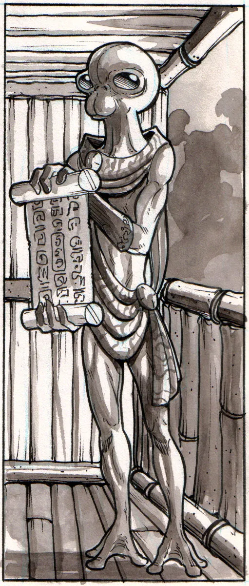
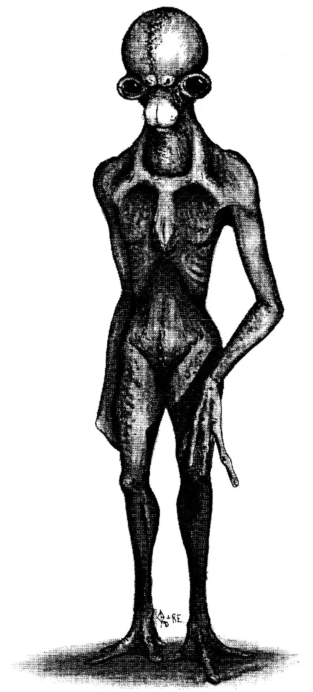
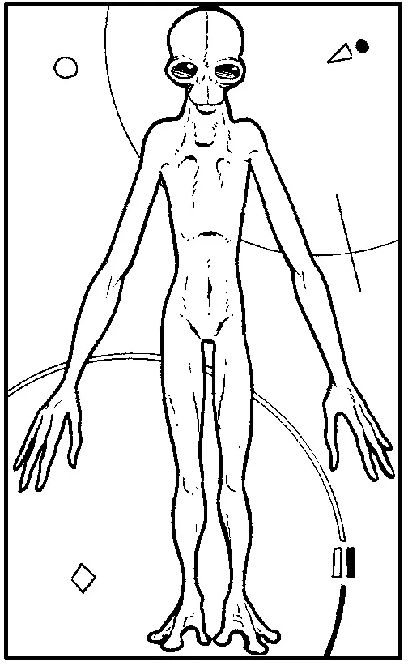

The Low Kaa have two arms, two legs and one appendage called the head; all of which is obvious at the first glance at the opposite picture. They walk as a biped and use their arms for manipulation. They have a large brain capacity and are an intelligent race. It can be determined from the artifacts and information which survived 'The Great War' that they once were a technologically advanced society which under- when a massive social upheaval during which almost all of the technology and knowledge was destroyed. After this period of violent change the Low Kaan culture was only a small remnant of its former sophistication.
Physiology
The upper most appendage, the head, contains most of the sensory organs and the brain. The trunk of the Low Kaa contains organ systems which accomplish respiration, circulation, and digestion within a supportive and protective skeleton. The upper and lower appendages can be described in basically three groups. The upper section, the lower section, and the hand or the foot. Both sets of appendages are formed in much the same way with the upper section being the shortest and the longest one being the longest. Their digits are similar on both the hands and he feet with a few exceptions: The feet have one more digit as the hands and the outermost toe is longer than the rest. The head, balanced by large muscle groups in the neck on the spinal cord, is the centre for information accumulation and processing. The head sits on top of the spinal column which is a hard springy structure, comprised of small curved bones which are connected in such a way as to form a helical structure with each turn of this helix connected to the turn above with hard spongy cells which allow their back bones to bend and move freely, which provides the support for the entire endoskeleton and also protects the large bundle of cells which transmit messages from the rest of the body to the brains. The head is a roughly spherical, hollow bone composed of curved plates that join together at suture lines. The brain is sheltered in the skull and it is linked to the rest of the body through a hole at the base of the skull just posterior to the fulcrum of the spinal column. The nervous system of the Low Kaa as with all creatures on the planet Carakuss develop after the rest of the body has formed from a proto-nervous cell which serves as a space holder during somatic development. During gestation the Low Kaa grow unhindered or controlled by a nervous system. As they grow older and just prior to the time when the autonomic functions of the body begin the proto-nervous cells differentiate into cells which are capable of transmitting electrical impulses these cells are collected into bundles along the helical backbone each of which is capable of processing sensory information and then relaxing the processed signals to the brain for further evaluation. Animals on the planet Carakuss have an extremely short gestation period, in some cases a matter of hours, and the Low Kaa are no exception. The average period for gestation is approximately 3.8 weeks in which three and a half are spent on somatic development and the other half of a week is used for the process of nervous accomodation and specialization. Because of this extremely fast rate of gestation the Low Kaa have many more instincts at birth that most other sentient life forms, In fact the Low Kaa are capable of finding food usually alive and raw and protecting themselves, as a reflex action, only a few hours after they are born. Because this response is a reflex action and usually unnecessary, the children are often left alone for the first hours after birth, without the parents care, this is usually the case in most births. As these instincts become less and less predominant the child becomes more dependant on its' learning ability and by the age of 15 years these instincts are totally submerged in the sub-conscience. Apart from the nervous system the body is completely developed at 2 weeks with the exception of the immune system, the thing responsible for the detection and eradication of foreign organisms. At birth the Low Kaa are have no ability to distinguish between themselves and another Low Kaa's tissue because of the way in which the child was connected to the mother. Only after birth does this ability develop. And as the Immune system becomes more accurate a larger amount chemical which indicate which cells are 'self' can be found in the blood. Along with these 'self' markers the Low Kaan blood also contains the molecules which carry oxygen to the cells, control growth, and supply energy to the cells to maintain normal functioning. The arms and the legs are joined to the endoskeleton by loose fitting joints and large muscle groups. The Low Kaa have a predominantly large muscle structure for the size of their torso which makes their silhouette distinctive. along their spine the Low Kaa have an area of pigmentation which ends in a large roughly circular mass of indentations and pigment. This area is similar to the grooves in the skin on a terrain finger and can also be used to differentiate from one Low Kaa to the other. This identification patch also serves a biological purpose as it is the only location on the Low Kaa where energy storing lipid molecules are collected. Unlike the terrains the body of the Low Kaa does not store excessive amounts of fat in this location but it burns off any extra energy in the form of increasing the metabolism of the person until the energy is used and it is for this reason that the Low Kaa do not have an extended ability to go without food and must have a regular and consistent food intake. The Low Kaa take in food through their mouths where it is ground into smaller pieces, allowing for more consistent digestion, by calcium pointed deposits which erupt from under the flesh in their mouths every 2 years throughout the life of the individual. During this period when the new teeth push out the old ones the person will undergo severe pain which is treatable by mild pain killers. The skin tone of the Low Kaa at birth ranges from a light to a dark blue and as the individual ages their skin tone reddens and upon death the skin may be pigmented a deep red or a royal purple. This race has no hair on the surface of their body and a second eyelid to protect their black eyes from injury by any dust or foreign objects. Even Though the overall appearance of this race in not like that of a terrain the Low Kaa use many of the same proteins and have similar physiology.

The process of heat conduction and absorption is still a valuable source of energy to the Fenbin, especially during the summer. The opposing colours cause heat currents in fluid channels within the thorax and abdomen, and this action drives molecule sized thermal-pumps that make high energy molecules that can be stored or used as needed. The organs of their respiratory system are mainly located in the abdomen and open to the atmosphere through the first groove in the exoskeleton where the legs originate. This slit is surrounded by stiff hairs that are kept moist to clean the inhaled air of fine particles and dust. A long windpipe joins the central sack, in the abdomen, with the horn structure atop the head. This connection was used to provide air to the individual when hunting (they buried themselves and would pounce upon unsuspecting prey) but now it is used for purely ceremonial uses. Their small and delicately structured heart is placed low in the thorax, and indicative of the light gravity of Tabell. Their weak heart, by our standards, still manages efficient oxygenation of their iron based blood. Their digestive system is strictly that of a carnivore specially equipped for an insect diet. Females Fenbin are larger than males, and they choose their mates at the beginning of the great celebration. The sexual organs share a duct with the spinneret, and copulation results in the male passing of a package of sperm wrapped in spun fibres to the female. She can then store the sperm or use it to fertilize her eggs. Fertilization will yield 2-3 dozen eggs all wrapped in cocoon. After three months the young will emerge for the cocoon and begin a process of growth that will last for the first 11 years of life. During this time they remain in the city as they would not survive in the extreme environment away from the city.

Senses
These people have acute distance vision due to the spacing of their eyes but have difficulty discerning motion unless it is directly toward or away from them. In the bright day of the planet Carakuss, on which they evolved, the Low Kaa are able to selectively filter out glare aided by the iris and the retina. Their night vision is not as developed and they have difficulty becoming accustomed to and seeing things in low light levels This is mainly due to the moons of Carakuss which keep the reflected sun's light on the planet constantly. The smell and taste senses of the Low Kaan are closely related almost to the point where both of the two senses must pe be present to have normal function of either. As with many other races the Low Kaa have sensory receptors just underneath almost all of their skin area and the concentration and kinds of these receptors vary from place to place on their bodies. Unlike the Terrains the Low Kaa do not have higher concentrations of these receptors in the pubic region of their bodies which makes intercourse not pleasurable nor fun by only a necessary function of life. The Low Kaa are able to receive audio stimulus and they have specialized structures to do so, but these are not the most accurate hearing devices in the galaxy and only because of the seclusion of the Low Kaa from major predatory animals have they survived for so long with the poor sense of hearing that they posses. Although it is bad they can distinguish direction and range from noise but they can only hear with in a small range which is not an extreme limitation because most noises are within the range that they can perceive.

Speech
They have been known to speak all Earth languages and can speak most of the languages of the foundation. They have been known to be very adaptive to new ways of speaking and the way in which different races put words together. It is for this reason that the Low Kaan have found a place in the foundation as translators. The native language of the Low Kaa is not accurately Known because of the effect of the Minecorp workers on the language it is now almost never spoken and is littered with pseudo-words which are a direct copy of those of the Terrains.
Social / Culture
The social organization of this race seem to be that of a normal post-agricultural society which has been infected by techno pollution but the history of this planet suggests otherwise. The majority of the history of Carakuss which can be determined from vague references in books which escaped the anti-technological regime that followed the great war is as follows. Prior to the war where all the technology has destroyed the culture of the Low Kaa was a very developed one where the technology was high enough for the people to put a colony on the next farthest planet from the trinary suns. This colony developed a government joined to that of Carakuss and its people flourished. This base was set-up as mainly a scientific station until it was safe to colonize by the general populace. Then a coup d'etat of the world government on Carakuss by a small radical group started a movement by the colony away from the government and towards autonomy. After a few months of rule there was a switch of leaders within the government of Carakuss. The new leader that came into power lead an army against the colony claiming it was taking all of the resources of the Carakuss and was going to start its own government. That was exactly what the Colony was planning to do and when they did the people began to believe their leader
Special Abilities
Sex
Life Span
They have good day vision and exceptional night vision. Height: 1 - 1.7 m Weight: 60 - 80 Kg Sex: Heterosexual Life Span: 75 - 105 Years
First Sphere - Racial Size Comparison Chart
 ###### Racial Size Comparison Chart---
###### Racial Size Comparison Chart---